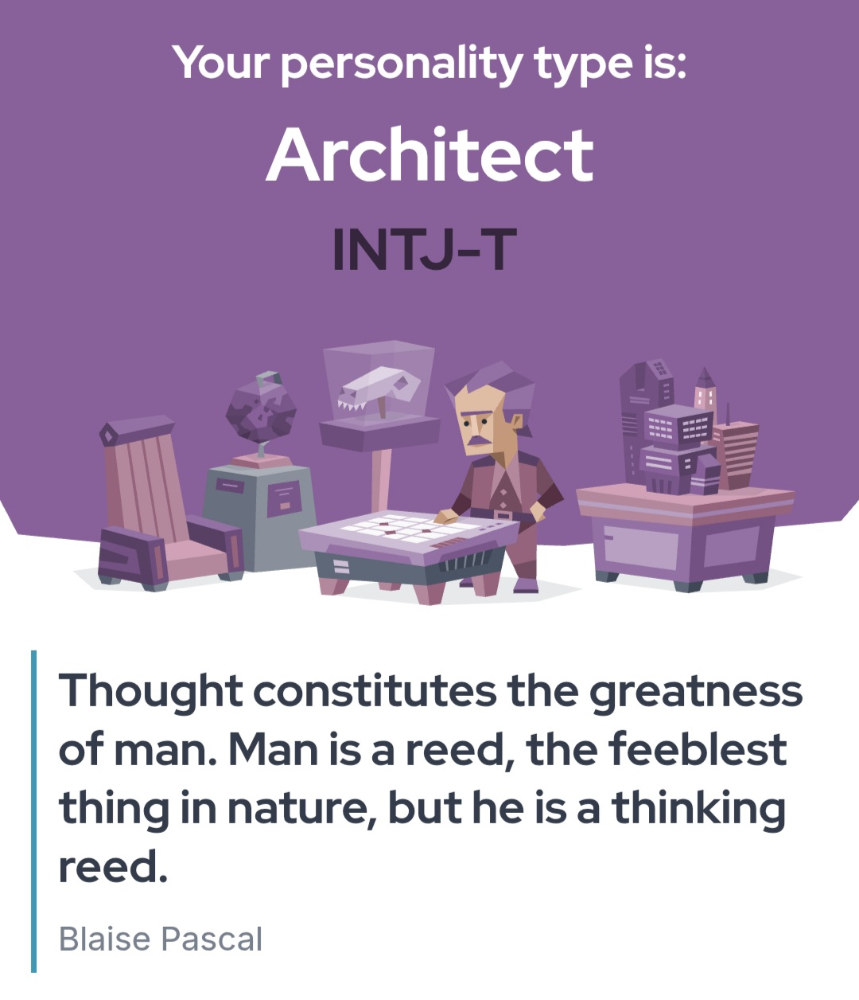
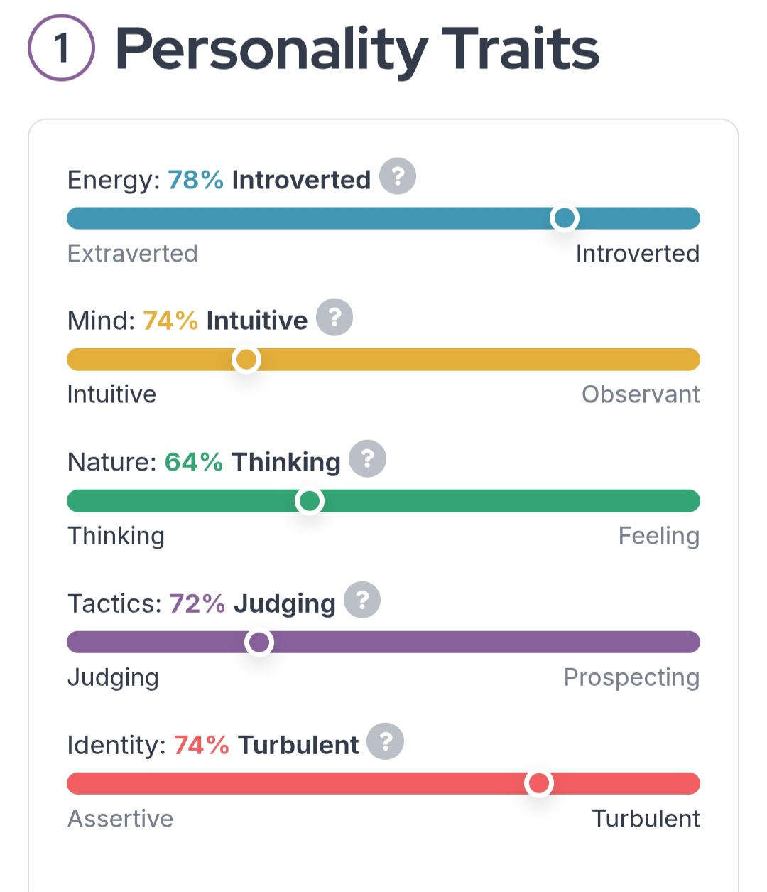
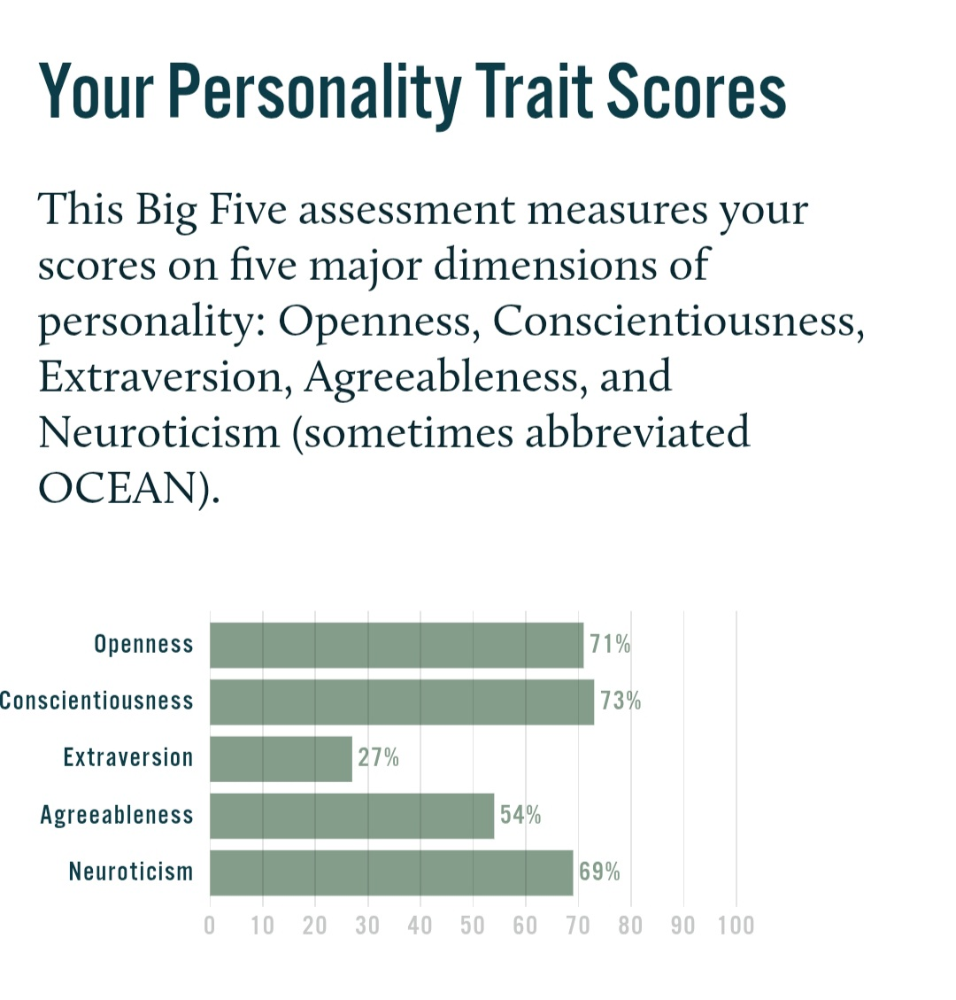
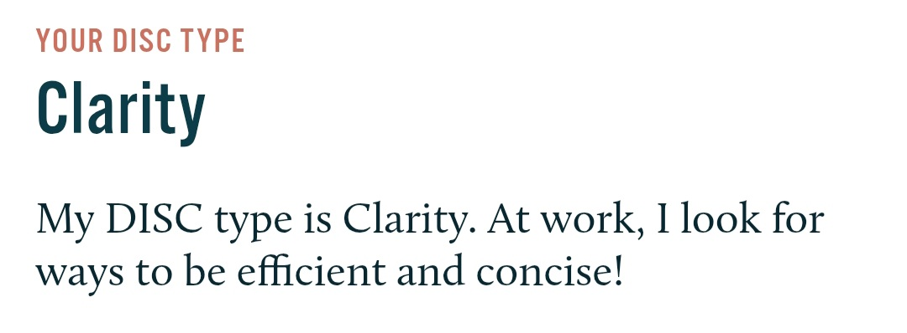
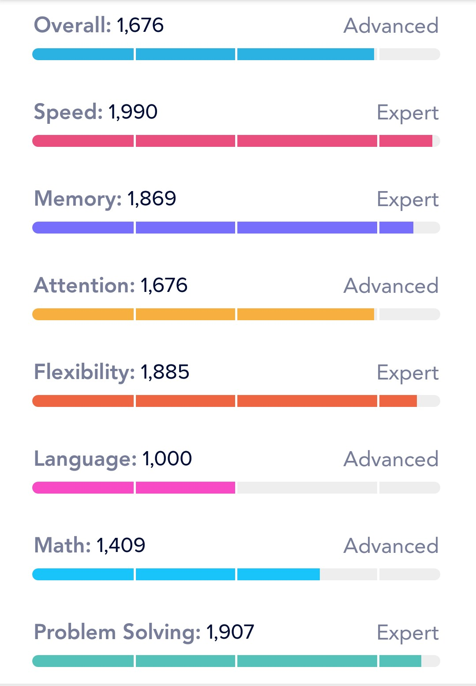

Personality Overview
1. MBTI Personality


I have an INTJ-T Personality type (The Architect – Turbulent). I took the MBTI test many times and got this type.
INTJ-Ts are strategic thinkers who plan carefully before taking action. They enjoy solving complex problems and understanding how systems truly work.
Their turbulent side makes them self-aware and constantly striving to improve. Independent, ambitious, and thoughtful, INTJ-Ts focus on long-term goals and personal growth above all.
2. OCEAN Personality

According to my Big Five results, I’m pretty creative and open to new ideas—I like exploring new experiences and thinking outside the box. I’m also fairly organized and reliable, so I usually stick to plans and follow through on tasks. I’m more on the introverted side, so I prefer smaller groups or quiet time over big social events. I’m somewhat cooperative and empathetic, but I can stand my ground when I need to. I do get stressed or anxious more easily, so I try to manage that carefully.
3. DISC Personality

According to DISC Personality, my DISC personality is Conscientiousness, which means I really value accuracy and organization. I like to plan carefully and make decisions based on facts rather than emotions. I work best when things are structured and expectations are clear, and I always try to deliver high-quality results. Sometimes I can be a bit cautious or perfectionistic, but my focus on precision and consistency makes me reliable and thorough in everything I do.
Mindpal Stats

I have a strong cognitive profile with high proficiency in speed, memory, problem solving, and mental flexibility. My Mindpal assessment highlights:
Speed: 99% – Rapid information processing and quick thinking
Memory: 94% – Excellent retention and recall
Attention: 84% – Focused and consistent concentration
Flexibility: 94% – Highly adaptable thinking
Problem Solving: 95% – Strong analytical and logical reasoning
Math: 71% – Solid numerical and calculation skills
Language: 50% – Adequate verbal and comprehension skills
Overall Score: 84% – Demonstrating strong overall cognitive abilities and problem-solving capabilities.